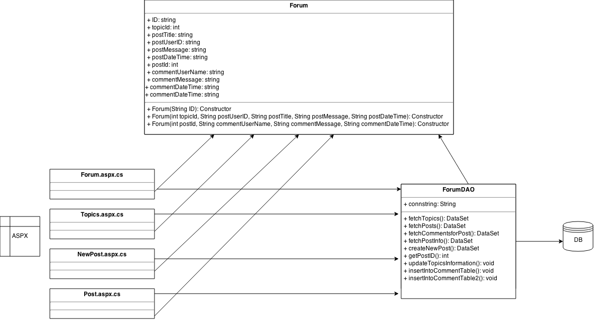
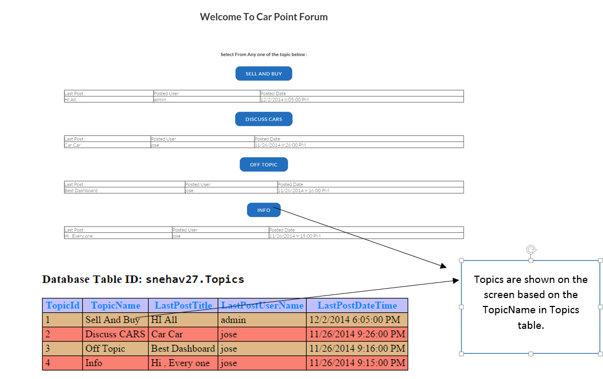
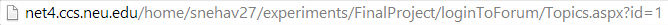
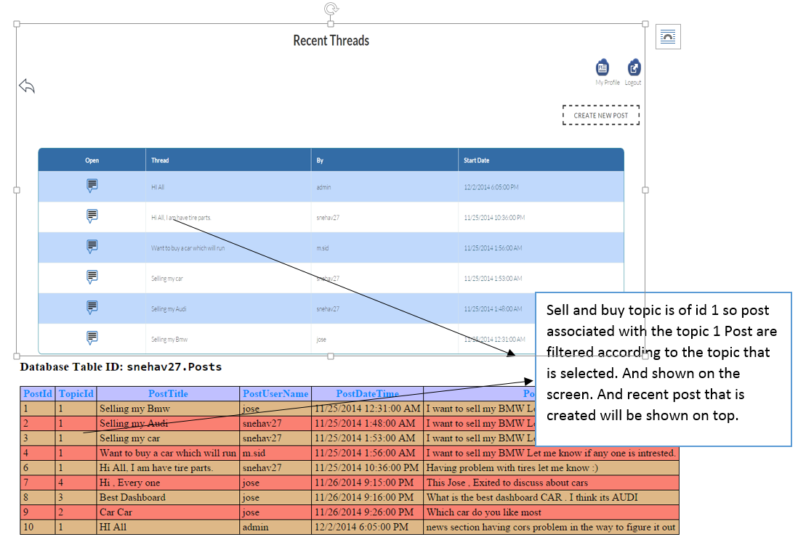
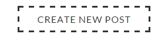
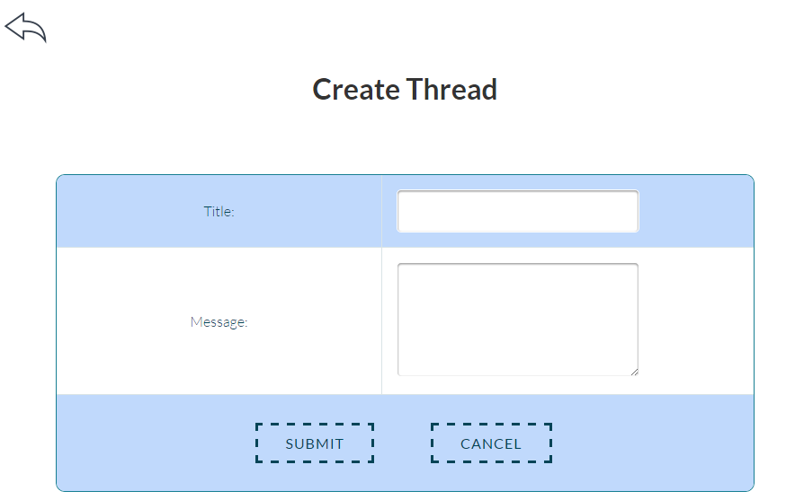
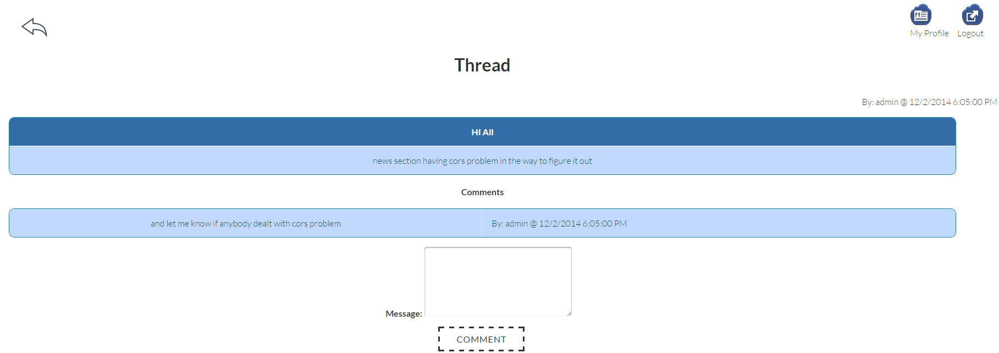
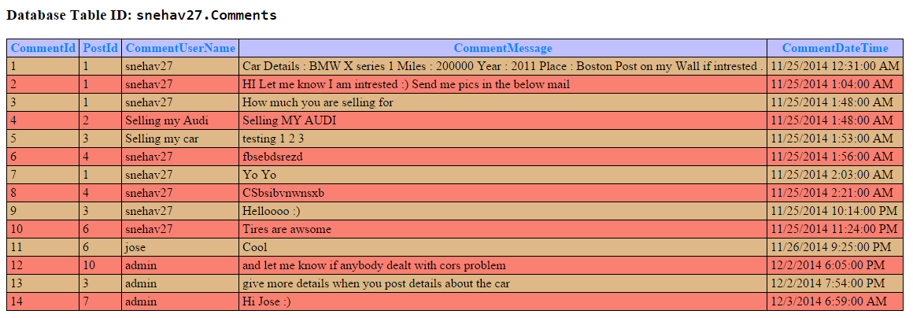

Forum Exaplanation :
Every website has forum, where people come and discuss about website related topics.
In my website, I have created forum so that users will be able to discuss about the cars, sell their cars, off topics.
This Module consists of three sections
1)Forum Page consists of Topics
2)Posts Page associated to topics.
3)Post page containing comments posted by other users.
Todays Fuel Price :
This is the information fetched from a web service to provide current fuel price .
Base Technologies used:
1) ASPX
2) HTML,CSS
Responsive:
Fully Responsive , no Bootstrap Used.
Table:
Posts
Topics
Comments
Access to this page:

Common buttons in Forum
Click on my profile in the forum any time will take user back to his profile.
Click on logout , will clear the session will direct user to login page.
Class Diagram :

- Forum Page:
- Posts In a Topic
- Comments In a Post
-
Explanation

Here user will be able to see different topics name according to the information in the table.Each topic is associated with topic id. In the above table we have four topic names. This table is updated with Last post title, last post username and last postdate time whenever a new post created inside that particular topic. i.e.
Source Code
In the above case Sell and Buy topic has last post created by admin. I can create more topics by adding another record in the topics table.
ASPX
Code Behind
Class to Store Values to pass to DAO
DAO
Style Sheet of html page
Style Sheet to adjust the components in the page
-
Explanation
Every post is associated with a topic. When a post is created on clicking on a topic, then that post will be associated with that topic ID in posts table.
In the below example explained I have selected the topic Sell and buy in the forum:
URL Pattern:

Using above URL, we are sending topic id of the topic to fetch the posts that are created under the topics from the post table.

Creating new post
Access to the page :

User is redirected to below page when clicked on create new post button.
After entering title and message user will be able to click on submit button. On click on the submit button thread record is created posts table. On cancel button click ,user is sent back to posts page.
Source Code
POSTS PAGE ASPX
POSTS Code Behind
NEW POST PAGE ASPX
NEW POST Code Behind
Class to Store Values to pass to DAO
DAO
Style Sheet of html page
Style Sheet to adjust the components in the page
-
Explanation
Page view of the posts where users will be able to comment on the thread and discuss.

Creating comments on the posts. Again in this case comments are associated with posts that are associated with.

This relationship is maintained using comment ID and Post ID column in the comments table.
Source Code
ASPX
Code Behind
Class to Store Values to pass to DAO
DAO
Style Sheet of html page
Style Sheet to adjust the components in the page